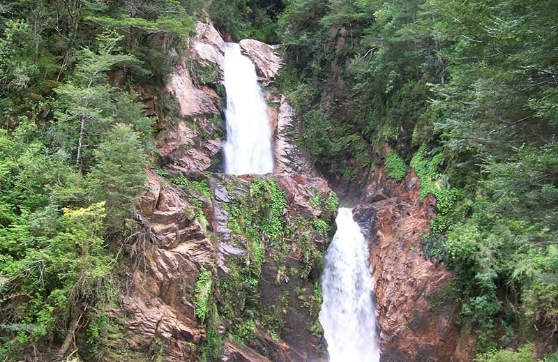
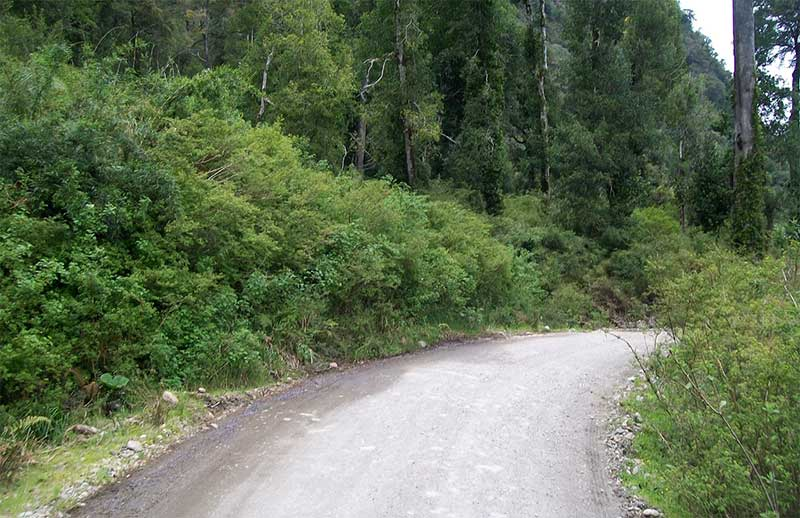

ADENTRO · SALA COMÚN
Calor de leña
Estar con combustión lenta y sillones para descansar en los días de lluvia patagónica.
Ubicado frente al puente Presidente Ibáñez y a dos cuadras de la plaza de Puerto Aysén. Un hostal familiar con calefacción a leña, desayuno continental cada mañana y recepción abierta las 24 horas para quienes recorren la región.


En Aysén el clima cambia varias veces en un mismo día. El hostal está pensado para salir temprano a la ruta y volver a descansar en seco.
Desde nuestra puerta en Teniente Merino 1080 estás a distancia de caminata de la costanera del río Aysén y a dos cuadras de la Plaza de Armas, donde se concentran cafés, bancos y comercio local.
Al regresar por la tarde, el salón común mantiene encendida la estufa a combustión lenta y la cocina equipada queda disponible para los huéspedes.
Estar con combustión lenta y sillones para descansar en los días de lluvia patagónica.

Cascadas y riberas cercanas a minutos en vehículo desde Puerto Aysén.

Orientación local para organizar tus tramos desde Balmaceda, Coyhaique o Chacabuco.
Tres configuraciones según tu viaje. Todas incluyen desayuno continental, Wi-Fi, TV cable y limpieza diaria.

Para viajeros en ruta o estadías laborales que requieren descanso silencioso y salida temprana.

Dos camas individuales con calefacción, ventana exterior y servicio de mucama antes del mediodía.
Seis servicios confirmados incluidos sin recargo adicional.
Desayuno servido cada mañana en el comedor más uso de cocina equipada.
Ingreso libre a cualquier hora del día o la noche con entrega de llaves.
Señal inalámbrica gratuita en dormitorios y espacios comunes.
Sin costo para huéspedes, sujeto a disponibilidad de espacio.
Televisión por cable en cada dormitorio.
Mucama todos los días antes del mediodía.
Lo que destacan quienes pasaron días de lluvia y ruta alojando en Hostal Hudson.
“La habitación muy comoda, la vista al río Aysén invita a quedarse y descansar, calentito en los días de frío y lluvia de la Patagonia... y el desayuno? El mejor que probamos desde Puerto Montt hasta Villa O’Higgins.”
Rodrigo Valenzuela · Reseña de Google
“Muy acogedor, ideal para pasar días de descanso. Las piezas impecables y equipadas con calefacción. Los desayunos exquisitos y contundentes. Tienen un perrito ovejero y mis hijos jugaron y se entretuvieron con él. 100% recomendados.”
Oscar Liendo · Reseña de Google
“Recomendado en un 100%. Anfitriones muy preocupados. Piezas hermosas y limpias. Lugar céntrico. Desayuno muy rico.”
Dedy Lincoqueo Soto · Reseña de Google
“El hostal super lindo, limpio y muy bien ubicado! :) Lo pasamos muy bien en nuestra estadía en Pto. Aysen. ¡Muchas gracias por su hospitalidad y buena onda! Sin duda volveremos!!”
Stephany Grego · Reseña de Google
“Excelente atención, muy amable, excelente desayuno. Siempre atentos.”
Santiago Pernigotti · Reseña de Google
“Muy bien servicio, cómodo, hermosa vista al río y buena ubicación, muy recomendable”
Patricio Fuentes · Reseña de Google
Sin formularios extensos ni comisiones. Escríbenos tus fechas y cantidad de personas al +56 9 9439 1571 y confirmamos disponibilidad a la brevedad.